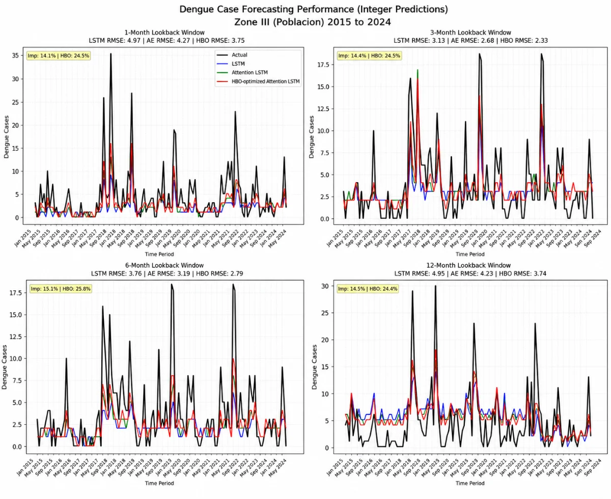

Dengue outbreak forecasting: dataset and model
A monthly 2015–2024 dataset for barangays in Koronadal City, South Cotabato, and a forecasting study built on it.
- problem
- Case counts, climate and geography were held by different agencies in formats that didn't agree on units, resolution or place names. There was no single table to model from.
- my part
- Sourcing, reconciliation, completeness and consistency checks, and the first-author write-up.
- how
- Merged DOH-CHD SOCCSKSARGEN case records, climate data (DOST PAG-ASA, Google Earth Engine rasters) and NAMRIA shapefiles, joined on location and month, into 2,918 rows × 19 columns with a data dictionary. The study model is an attention-based LSTM with hyperparameters tuned by the Honey Badger Algorithm.
- decisions
-
- Monthly, not weekly. Monthly was the finest resolution every source could support for all ten years. Weekly would have left gaps to fill with assumptions.
- Checked completeness and consistency before any pre-modelling step, because each cleaning method makes its own assumption about the gaps.
- result
- MSE 43.7% lower than a standard LSTM and 22.2% lower than an attention-only model, per the published abstract. The model still underpredicts extreme spikes, and the paper reports that next to the results.
Google Earth EngineShapefilesLSTMData dictionary

One barangay from the study. The HBO-tuned model (red) has the lowest RMSE in every window, and it still undershoots the tallest peaks.
IJLTEMAS Vol. XV, Issue VI, pp. 2621–2632 · doi:10.51583/IJLTEMAS.2026.150600192